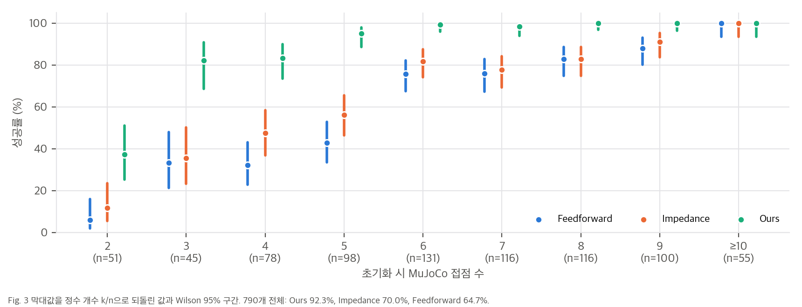
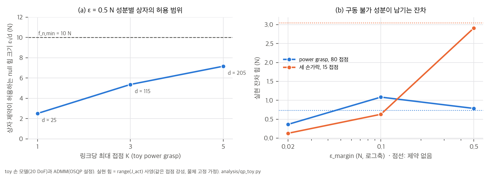
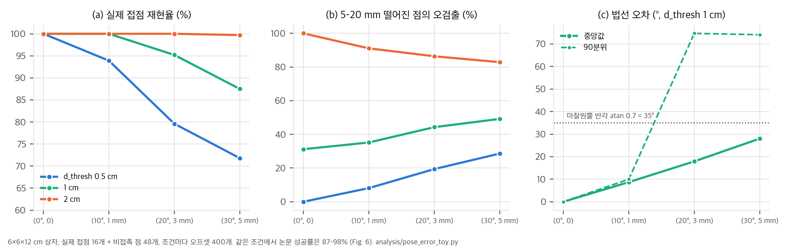

rophi-lab/RoPhiTutorial @ 85aaa4c(2026-08-02)에 같은 하드웨어용 force-closure 제어기와 시뮬레이션 평가 설정이 있어서 대조했습니다(04 §2).한 줄 요약: 촉각 센서 없이 추적한 물체 메쉬와 관절각만으로 손 전체 링크의 접점을 기하적으로 계산하고, 매 제어 주기마다 그 접점 집합 위에서 접촉력 분배 QP를 다시 풀어 관절 토크로 내보내는 dexterous 파지 제어기입니다. 앞단에 reactive reaching을 붙여, 잡기 → 유지 → 놓친 뒤 다시 잡기까지 자동으로 이어 갑니다.
주장은 세 가지입니다(Abstract, Sec. I).
물체 메쉬 M (시뮬레이션: CAD, 실물: RGB-D 스캔 → Point2Pose + 2D Gaussian Splatting → Poisson)
└─ SDF 사전 계산 (물체 기준 좌표계)
손 링크 메쉬 → 링크당 2,000점 → FPS로 2점/cm² → 손 전체 약 3,000개 후보점 (한 번만)
매 제어 주기:
관절각 q + 추적 물체 자세(FoundationPose 변형, 30 Hz)
→ 후보점을 물체 좌표계로 옮겨 SDF 조회 (Warp, 1 ms 미만)
→ 거리 < d_thresh(1 cm)인 점 중 링크마다 가까운 K(=5)개 = 접점 집합 C_t (Eq. 1)
→ 접촉력 QP: min ½‖G f‖² s.t. 마찰 피라미드, Σf_n ≥ 10 N, 토크 한계, actuation-consistency (Eq. 3–9)
→ τ* = J_actᵀ f*_act (Eq. 10) · 풀이 실패 시 직전 해의 토크 유지
앞단: reactive reaching (Lee et al. [20]) → 엄지+두 손가락 접촉 시 힘 조절로 전환
손끝·손바닥의 볼록 껍질이 물체 bounding box와 안 겹치면 "놓침" → 다시 reaching
| 식 | 내용 | 값 (Sec. IV) |
|---|---|---|
| Eq. 2–3 | w_c = G f_c, 목적함수 min ½‖G f_c‖². 힘(N)과 토크(N·m)에 같은 가중치 1 | |
| Eq. 4–5 | f_n ≥ 0, |f_t1| + |f_t2| ≤ μ f_n (Coulomb 원뿔에 내접한 피라미드) | μ = 0.7 |
| Eq. 6 | Σ f_n ≥ f_n,min (0 해 방지, 최소 조임) | 10 N |
| Eq. 7–8 | 구동 링크 접점만 τ = J_actᵀ f_act, |τ| ≤ τ_max. 손바닥 같은 비구동 접점은 수동 반력으로 취급 | 0.2 N·m/관절 |
| Eq. 9 | Actuation consistency: J_act의 SVD에서 rank 너머의 왼쪽 특이벡터 N_u (null(J_actᵀ)의 기저)로 −ε 1 ≤ N_uᵀ f_act ≤ ε 1 | ε = 0.5 N, SVD 허용 오차 1e-6 |
| Eq. 10 | τ* = J_actᵀ f*_act |
Fig. 4를 픽셀 판독한 값입니다(analysis/fig_digitize.py). 본문 수치 두 개로 보정했고, Ours 0° = 100.0으로 검증했습니다.
| 방법 | 0° (50 파지) | 30° | 60° | 90° |
|---|---|---|---|---|
| Ours | 100.0 | 96.4 | 93.2 | 88.6 |
| Fingertip-only | 84.0 | 81.8 | 78.4 | 72.4 |
| Feedforward | 78.0 | 68.2 | 64.0 | 59.2 |
| Impedance | 70.0 | 65.2 | 60.8 | 56.8 |
04 C2).790개 파지를 초기화 시점의 MuJoCo 접점 수로 나눈 결과입니다. 막대값 27개가 모두 해당 구간 n에서 정수 k/n으로 맞습니다(04 C1).
| 접점 수 | 2 | 3 | 4 | 5 | 6 | 7 | 8 | 9 | ≥10 | 전체 |
|---|---|---|---|---|---|---|---|---|---|---|
| n | 51 | 45 | 78 | 98 | 131 | 116 | 116 | 100 | 55 | 790 |
| Feedforward | 6 | 33 | 32 | 43 | 76 | 76 | 83 | 88 | 100 | 64.7 |
| Impedance | 12 | 36 | 47 | 56 | 82 | 78 | 83 | 91 | 100 | 70.0 |
| Ours | 37 | 82 | 83 | 95 | 99 | 98 | 100 | 100 | 100 | 92.3 |

우리 분석: Fig. 3을 정수 개수로 되돌리고 구간별 Wilson 95% 구간.
Actuation consistency (Fig. 5): 세 손가락 파지 예시 하나에서, 제약이 없으면 측정한 접촉력의 합력이 0.428 N 남고, 제약을 넣으면 거의 0이 됩니다.
04 C3). 저자들도 "slightly"라고 썼습니다.자세 오차 (Fig. 6): 제어기에 주는 물체 자세에 일정한 회전·이동 오프셋(0–30°, 0–5 mm)을 넣고, 파지마다 오프셋 방향 5개로 시험했습니다.
| 오프셋 (회전, 이동) | (0°, 0) | (10°, 1 mm) | (20°, 3 mm) | (30°, 5 mm) |
|---|---|---|---|---|
| Feedforward | 79 | 75 | 65 | 54 |
| Ours, d_thresh 0.5 / 1 / 2 cm | 98 / 98 / 98 | 92 / 97 / 98 | 90 / 95 / 95 | 87 / 93 / 91 |
저자들도 이 결과는 일정한 편향에 대한 강건성일 뿐이고, 시간에 따라 변하는 잡음, 지연, 추적 상실은 평가하지 않았다고 밝힙니다.
링크당 접점 수 K (Fig. 7):
하드웨어: 27 DoF 플랫폼(Flexiv Rizon 4 7-DoF 팔 + Robotis 5F 20-DoF 손)과 RealSense D455 한 대입니다. 손끝 촉각 센서는 쓰지 않았습니다. 계산은 i9-13900K + RTX 4090입니다.
추적: 추적 자세가 지연되어 도착하므로, 접점 추정과 QP는 추적 자세가 올 때마다(30 Hz) 한 번 돌고, 그 이미지 타임스탬프의 관절각을 씁니다.
결과(Table I):
| 물체 | 시간 | 교란 | 놓침 | 회복 |
|---|---|---|---|---|
| Pringles | 59 s | 16 | 3 | 3/3 |
| Small box | 48 s | 31 | 2 | 1/2 |
| Large box | 94 s | 31 | 3 | 2/3 |
| 합계 | 201 s | 78 | 8 | 6/8 |
분류 체계 밖의 파지(Fig. 10): 손가락을 캔 앞뒤로 번갈아 두어 일부 손가락이 등으로 물체를 받치게 했습니다. 이 상태에서도 등 쪽 접점이 같은 Jacobian으로 조절되는 것을 정성적으로 보였습니다.
04 C6). "실패 대부분이 자리 잡는 동안 일어난다"는 저자 관찰과 맞습니다. 이 시험이 주로 재는 것은 제어기가 자기 힘으로 물체를 밀어내지 않는 능력입니다. 중력과 실제 하중이 걸린 시뮬레이션 비교는 없습니다.03 §2).
03 §1).
03 §5). 6×6×12 cm 상자에서 (30°, 5 mm) 오프셋이면 다음과 같습니다.
04 D3).04 D5).스크립트는 analysis/qp_toy.py(QP 구조, 결과 qp_toy_results.json), analysis/pose_error_toy.py(자세 오차와 접점 추정), analysis/table_check.py(그림·표 재계산), analysis/fig_digitize.py(Fig. 4 판독)입니다. 모두 numpy·scipy, 단일 스레드, CPU에서 수 초 안에 끝납니다.
QP는 같은 연구실 공개 코드 utils/grasping/force_gen.py: generate_contact_forces의 형식을 그대로 옮겼습니다. 결정변수는 z = [f; w], 제약은 w = G f, 비용은 ½‖w‖²입니다. OSQP는 설치되어 있지 않아서, 같은 ADMM 반복(ρ = 0.1, σ = 1e-6, α = 1.6, 등식 행 ρ×10³, 0에서 시작, 1,000회, polish 없음)을 numpy로 구현했습니다.
toy 손은 반지름 4 cm 원통을 감싸는 5손가락 × 4관절(20 DoF) 직렬 사슬과 비구동 손바닥입니다. 실제 Robotis 5F 기구학이 아니라, "링크 j 위의 점은 그 손가락 j번째 관절까지에만 의존한다"는 Jacobian의 희소 구조만 살린 모델입니다.
구조. G ∈ R^{6×3N}이므로 null(G)의 차원은 3N − rank(G) ≥ 3N − 6입니다. 마찰 원뿔 안에서 정확한 평형(G f = 0)을 이루는 조임이 가능하면 목적함수의 최솟값은 0이고, 최적해 집합은 다음과 같습니다.
S* = { f : G f = 0, f_n ≥ 0, |f_t1| + |f_t2| ≤ μ f_n, Σ f_n ≥ f_min, |J_actᵀ f_act| ≤ τ_max, (Eq. 9) }
이 집합은 볼록 다면체이고, f ∈ S이면 cf (c ≥ 1)도 토크 한계에 걸리기 전까지 모두 S에 들어갑니다. 즉 조임의 총량도 분배도 목적함수가 정하지 않습니다. 어느 해가 나올지는 솔버가 정합니다. 공개 코드는 힘 크기 정규화 항을 기본으로 쓰지 않습니다(contact_epsilon=None).
toy 결과 (E1, E2). K = 3, 접점 48개(손바닥 3개 포함)입니다.
| 시작점 | 물체 잔차 | Σf_n | 최대 f_n | 0에서 시작한 해와의 상대 차이 |
|---|---|---|---|---|
| 0 (코드처럼 매 주기 새 솔버) | 0.000 N | 14.6 N | 0.57 N | — |
| 무작위 8개 | 0.000 N | 29.7–39.1 N | 2.4–4.4 N | 1.8–3.0배 |
힘과 토크의 같은 가중치. 비용 ½(‖w_force‖² + ‖w_torque‖²)에서, 반지름 r에 작용하는 접선 힘 불균형 1 N이 만드는 토크 r N·m는 r²만큼만 벌점을 받습니다(r = 5 cm면 0.0025배). 정확한 평형이 가능할 때는 영향이 없습니다. 제약 때문에 평형이 불가능할 때는 QP가 회전 평형을 사실상 포기하고 병진 평형만 맞춥니다.
유도. 구동 접점의 힘을 f_act = f_R + f_N (f_R ∈ range(J_act), f_N ∈ null(J_actᵀ))로 나누면 τ = J_actᵀ f_act = J_actᵀ f_R입니다. 명령 토크는 f_N을 전혀 담지 못합니다.
접점 강성이 모두 같고 물체가 고정되어 있다고 가정하면(준정적), 실제 접촉력은 Jᵀf = τ를 만족하는 해 중 탄성 에너지가 가장 작은 것, 즉 f_real = J(JᵀJ)⁻¹τ = P_R f_act입니다. 그러면 QP가 믿은 평형과 실제의 차이는 G_act P_N f_act로 남습니다. Fig. 5의 0.428 N이 이 잔차입니다.
차원. n_h = 20이므로 rank(J_act) ≤ 20이고, null 차원은 d = 3N_act − rank ≥ 3N_act − 20입니다. 성분별 상자 |N_uᵀ f| ≤ ε는 null 성분 크기를 최소 ε(기저 방향)부터 최대 ε√d(상자 꼭짓점)까지 허용합니다. 상자는 SVD가 고른 기저에 따라 달라지므로 회전 불변도 아닙니다.
| toy 파지 | 접점 (구동) | rank | d | ε√d (ε = 0.5 N) |
|---|---|---|---|---|
| power, K = 1 | 16 (15) | 20 | 25 | 2.5 N |
| power, K = 3 | 48 (45) | 20 | 115 | 5.4 N |
| power, K = 5 | 80 (75) | 20 | 205 | 7.2 N |
| 세 손가락, K = 5 | 15 (15) | 10 | 35 | 3.0 N |

실현 잔차 (E3, E3b). "실현 힘 = range 사영" 가정에서 남는 힘 잔차(N)입니다.
| toy 파지 | 제약 없음 | ε = 0.5 | ε = 0.1 | ε = 0.02 |
|---|---|---|---|---|
| power, K = 5 | 0.74 | 0.79 | 1.08 | 0.36 |
| 세 손가락, K = 5 | 3.05 | 2.91 | 0.63 | 0.13 (평형 잔차 0.21 N) |
K = 1(14 접점, 227 Hz)과 K = 7(91 접점, 66 Hz)로 t = a + b·N을 맞추면, t ≈ 2.45 ms + 0.140 ms × N_contacts입니다.
6×6×12 cm 상자로 조건마다 오프셋 400개를 시험했습니다. 실제 접점은 16개(엄지 3, 손가락 9, 손바닥 4)이고, 실제 표면에서 5–20 mm 떨어진 비접촉 점 48개를 함께 넣었습니다. 회전 중심은 물체 원점이고, 논문 규칙대로 부호 거리 < d_thresh(침투 포함)를 접점으로 봅니다. 아래는 d_thresh = 1 cm 기준입니다.
| 오프셋 (회전, 이동) | 실제 접점 재현율 | 비접촉 점 오검출 | 법선 오차 중앙값 / 90분위 | 논문 성공률 (Fig. 6) |
|---|---|---|---|---|
| (0°, 0) | 100% | 31% | 0° / 0° | 98% |
| (10°, 1 mm) | 100% | 35% | 9° / 10° | 97% |
| (20°, 3 mm) | 95% | 44% | 18° / 75° | 95% |
| (30°, 5 mm) | 88% | 49% | 28° / 74° | 93% |

| 확인 | 결과 |
|---|---|
| Fig. 3 막대 27개가 구간 n의 정수 k/n인가 | 모두 가능. 전체 Ours 729/790 = 92.3% [90.2, 93.9], Impedance 553/790 = 70.0%, Feedforward 511/790 = 64.7% |
| Fig. 3 본문 서술 | "3–5 구간 32–56% vs 82–95%", "약 1/3이 5개 이하(34.4%)" 모두 일치. 3–5 구간 Ours 195/221 vs Impedance 108/221, p ≈ 1×10⁻¹⁹ |
| Fig. 4 판독값과 시행 수 | 0° 값이 모두 2%의 배수(50 파지), 30–90° 값이 0.2%의 배수(500회)에 0.1%p 안에서 맞음 |
| Fig. 4 ↔ Fig. 7 | Ours의 30/60/90° 평균 92.7% vs Fig. 7 K = 5의 93.2%(같은 파지·각도, 반복 수 다름) |
| 정밀 파지 38.5% → 42.1% (68 파지) | 파지당 1회로는 불가능, 5회(340회)면 131 → 143. p ≈ 0.39 |
| Fig. 7 성공률(750회) | 682, 699, 689로 정수 가능. K = 1 vs 5 p ≈ 0.13 |
| Table I | 합계 201 s, 78회, 8회 놓침, 6회 회복으로 본문과 일치 |
sangminkim-99/reactive-grasp-whole-hand(@ 3ab1aa5)는 웹페이지 저장소입니다.rophi-lab/RoPhiTutorial @ 85aaa4c(2026-08-02, 논문보다 7주 앞섬)입니다. controller/, utils/grasping/, configs/, env/만 sparse clone했습니다(repos/, gitignore).
| 논문 | 공개 코드 위치 | 일치 여부 |
|---|---|---|
| 링크 표면 표본, 2점/cm² | utils/grasping/link_surface_sampler.py, surface_density_per_cm2: 2.0 |
✅ |
| 거리장 사전 계산 + Warp 질의 (Sec. III-B) | utils/grasping/udf_contact_detector.py: UDFGrid (128³, padding 2 cm, Warp GPU) |
⚠️ SDF가 아니라 UDF(D2) |
| 링크마다 임계값 안의 가까운 K개 (Eq. 1) | detect_contacts(..., dist_threshold, max_contacts_per_link) |
✅ |
| QP 목적함수 ½‖Gf‖² (Eq. 3) | force_gen.generate_contact_forces: z = [f; w], w = Gf, 비용 ½‖w‖² |
✅ (lifted 형식) |
| 마찰 피라미드 (Eq. 4–5) | 접점당 부등식 4개 ±f_t1 ± f_t2 − μ f_n ≤ 0, f_n ≥ 0 |
✅ |
| Σf_n ≥ f_n,min (Eq. 6) | A_min_fn |
✅ |
| 토크 한계 (Eq. 7–8) | A_torque = Jr_contactᵀ, torque_limit: 0.2 |
✅ |
| Actuation consistency (Eq. 9) | enable_achievable_force: U, s = svd(Jr_act), rank = sum(s > 1e-6), N = U[:, rank:], ±null_space_margin |
✅ 식과 같음. 손바닥은 actuated_mask로 제외 |
| 손바닥은 수동 반력 | actuated_mask = c_link_indices != palm_link_idx |
✅ |
| OSQP | osqp.OSQP().setup(..., max_iter=1000, polish=False)를 매 호출마다 새로 생성 |
✅ (설정은 논문에 없음, D7) |
| τ* = J_actᵀ f* (Eq. 10) | _compute_tau_from_J_and_f |
⚠️ 접근 토크가 더해짐(D3) |
| 실패 시 직전 토크 유지 | 시뮬레이션 평가 MjEvalGraspControl: tau_qp = self._prev_tau_qp |
✅ (실물 제어기는 다름, D5) |
| 기준선 feedforward / impedance | control_type: feedforward_force_control, task_space_impedance_control, 제안 방법은 real_time_feedforward_force_control |
✅ |
| Sec. IV 설정 μ 0.7, f_n,min 10 N, τ_max 0.2, d_thresh 1 cm, K 5, ε 0.5 N | configs/robotis_5f/grasp_squeeze/default.yaml |
✅ 여섯 값 모두 같음 |
| # | 내용 | 영향 |
|---|---|---|
| D1 | 시뮬레이션 평가 설정(grasp_squeeze/default.yaml)이 논문 Sec. IV와 여섯 값 모두 같습니다(μ, f_n,min, τ_max, d_thresh, K, ε). 반면 controllers/grasp_eval.yaml은 K = 3입니다. |
같은 계열 구현이라는 강한 증거입니다. 다만 설정 파일이 두 벌이라 논문 실험이 어느 쪽이었는지는 논문 값으로만 판단할 수 있습니다. |
| D2 | 거리장이 부호 없는 UDF입니다(build_distance_field, backend auto/udf). 법선은 UDF 기울기에서 얻어서, 손 표본점이 물체 안으로 들어가면 법선 방향이 뒤집힙니다. 부호로 뒤집어 주는 옵션(flip_obj_normal_by_sign)은 기본으로 꺼져 있습니다. |
논문은 "signed distance field"라고 씁니다. 저자들이 한계로 든 "얇은 물체에서 몇 mm 오차로 법선이 뒤집힌다"는 현상이 UDF에서 특히 쉽게 생깁니다. 침투한 점의 힘 방향이 반대로 할당될 수 있습니다. |
| D3 | **토크 = QP 토크 + 손끝 접근 토크(+ 인력 토크)**입니다. 접점이 없는 손가락의 손끝을 UDF 최근접 표면 쪽으로 0.1 m/s로 끌어당기는 속도 QP 토크(APPROACH_KD = 0.1, 지수 평활 0.1)가 더해집니다. 인력 토크는 attract_stiffness: 0이라 꺼져 있습니다. 접점이 하나도 없으면 접근 토크 + PD 닫힘만 씁니다. |
논문 Eq. 10은 τ* = J_actᵀ f*뿐입니다. "닿지 않은 손가락을 닫는" 동작이 QP 밖에서 따로 만들어집니다. 파지가 자리 잡는 단계의 성공(01 §3.3)에 이 장치가 얼마나 기여하는지는 알 수 없습니다. |
| D4 | QP에 중력 wrench 항(‖Gf + w_g‖²)과, 질량을 알면 f_n,min을 m·g 이상으로 올리는 옵션이 있습니다. 접점별 ε 가중 정규화 ½λΣε_i²‖f_i‖²(eps_translation/rotation)도 있습니다. |
논문은 중력·외력을 보상하지 않는 준정적 조임이라고 씁니다. 시뮬레이션은 중력을 끄므로 영향이 없습니다. 정규화는 기본으로 꺼져 있어, 03 §1의 비유일성이 코드에도 그대로 있습니다. |
| D5 | 실물 제어기 설정이 논문 서술과 다릅니다(controllers/three_finger_reactive_force_closure.yaml). · K = 3 (논문: 시뮬레이션과 같은 K = 5) · enable_achievable_force: false (Eq. 9 끔) · enable_gravity_wrench: true, f_n,min 5 N을 m·g 이상으로 올림 · 힘 제어 50 Hz · "세 손가락" reaching · QP가 실패하면 Eq. 9를 빼고 f_n,min을 절반으로 낮춰 다시 풀고, 그래도 실패하면 손 토크 0 + 정지 |
공개 튜토리얼은 논문 실물 실험(다섯 손가락, K = 5)보다 앞선 버전으로 보입니다. 논문 실물 실험의 정확한 설정은 공개 자료로 확인할 수 없습니다. |
| D6 | 시뮬레이션 QP 실패 시 직전 토크를 유지합니다. | 논문과 같습니다. |
| D7 | OSQP를 매 주기 새로 만들어 0에서 시작합니다(warm start 없음, max_iter=1000, polish=False). |
논문에 없는 설정이지만, 03 §1의 해 선택(최소 노름에 가까운 해)을 정합니다. 1,000회 안에 수렴하지 못하면 "solved inaccurate"(status 2)도 성공으로 받습니다. |
| D8 | MuJoCo 손 모델의 접촉 geom은 condim=3, friction="0.7 …", timestep 0.001, Euler 적분, solver 반복 5회입니다. |
시뮬레이터의 마찰계수가 제어기 μ와 같습니다. MuJoCo 기본 피라미드 원뿔(사전 지식)이면 시뮬레이터의 마찰 모델이 Eq. 5와 같은 모양이라, 시뮬레이션에서는 "보수적 근사"가 아닙니다. |
| D9 | 섭동 환경(MjMeshesGraspEvalEnv)은 키 입력으로 시작하는 대화형 도구입니다. 회전각을 N(0, σ_rot = 2 rad)에서 뽑고, 스프링 Kp = 1000·m에 힘 상한 10 N을 둡니다. 논문의 고정 각도(30/60/90°), 6방향 하중 시험, 790개 일괄 평가 스크립트는 공개 코드에 없습니다. |
논문 수치를 재현할 하네스가 공개되지 않았습니다. |
analysis/table_check.py, fig_digitize.py, qp_toy.py, pose_error_toy.py)| # | 확인 | 결과 | 판정 |
|---|---|---|---|
| C1 | Fig. 3 막대 27개의 정수 정합, 전체 성공률, 본문 서술 | 모두 정수 k/n 가능. Ours 92.3% [90.2, 93.9], Impedance 70.0%, Feedforward 64.7%. "32–56% vs 82–95%", "1/3(34.4%)" 일치 | ✅ |
| C2 | Fig. 4 판독(본문 두 점으로 보정, Ours 0° = 100.0 검증) | 0°는 2% 격자, 30–90°는 0.2% 격자와 맞음. 90°에서 Ours 88.6 vs Fingertip-only 72.4, p ≈ 1×10⁻¹⁰ | ✅ |
| C3 | 다른 그림의 시행 수 | Fig. 7의 750회 값은 정수 가능(K = 1 vs 5 p ≈ 0.13). 정밀 파지 38.5→42.1%는 68 파지 1회로 불가능하고, 5회 반복이면 131→143, p ≈ 0.39 | ⚠️ 시행 수 미기재 |
| C4 | Table I과 본문 | 201 s, 78회, 8회 놓침, 6회 회복. 교란당 놓침 10.3% [5.3, 19.0]. 작업공간 이탈 2회를 빼면 회복 6/6 | ✅ |
| C5 | 계산 속도 | t ≈ 2.45 + 0.140·N ms. K = 5(65 접점) 예측 86 Hz vs 페이지 84 Hz. 실물 루프는 30 Hz | ✅ |
| C6 | 하중 대 용량 | μ f_n,min = 7 N(7.1 kg 상당) ≫ 0.1 mg. Fig. 5 잔차 0.428 N이 0.44 kg 미만 물체에서는 하중보다 큼 | 해석 주의 |
| C7 | Eq. 9의 실효 크기 | toy에서 d = 25–205, ε√d = 2.5–7.2 N. ε = 0.5에서 실현 잔차가 거의 줄지 않음 | ⚠️ 03 §2 |
| C8 | 자세 오차 아래 접점 | (30°, 5 mm), d_thresh 1 cm에서 재현율 88%, 법선 오차 중앙값 28°, 비접촉 점 오검출 49% | ⚠️ 03 §5 |
지금은 불가능합니다. 공식 코드가 "Soon" 상태이고, 섭동·하중 시험 하네스와 790개 평가 스크립트도 없습니다.
| 항목 | 요구 사항 | 이 맥(M4 Pro, CUDA 없음) |
|---|---|---|
MuJoCo 평가(MjMeshesGraspEvalEnv + MjEvalGraspControl) |
mujoco, pinocchio, trimesh, osqp, warp, omegaconf, LCM 통신 계층 | 조건부로 가능해 보입니다. MuJoCo와 OSQP는 CPU에서 돌고, UDF 계산은 udf_device를 cpu로 바꾸거나 backend: mesh(trimesh CPU)를 써야 합니다. 설치 승인이 필요하고, 실제 동작은 확인하지 않았습니다 |
| 목표 파지 | Dexonomy[5] 파지와 YCB 메쉬. 튜토리얼에는 일부 물체의 파지 예측 파일만 있음 | 790개 파지를 다시 만들려면 Dexonomy를 돌려야 합니다(별도 확인 필요) |
| 섭동·하중 시험 | 직접 작성(논문 Fig. 2 프로토콜) | 수십~수백 줄 스크립트 |
| 실물 | Flexiv Rizon 4 + Robotis 5F + RealSense, FoundationPose(GPU), Point2Pose + 2DGS 스캔 | 불가능(하드웨어, NVIDIA GPU) |
| 구성 요소 | 난이도 | 메모 |
|---|---|---|
| 기하 접점 추정(링크 표본 + SDF 질의 + 링크별 top-K) | 낮음 | numpy만으로도 됩니다. UDF가 아니라 SDF를 쓰고 침투 부호를 처리해야 합니다(D2) |
| 힘 분배 QP | 낮음 | OSQP나 cvxpy로 수십 줄입니다. 해를 정하는 정규화 항(예: λ‖f‖²)과 ε의 크기(√d 조정)를 함께 정하는 것을 권합니다(03 §1–2) |
| 토크 변환 + 접근 토크 + 전환 상태기계 | 중간 | 논문 Eq. 10만으로는 닿지 않은 손가락이 닫히지 않습니다. 공개 코드의 접근 토크(D3) 같은 장치가 필요합니다 |
| reactive reaching(Eq. 11) | 중간 | 충돌 제약이 있는 관절 속도 QP. Lee et al. [20] 코드는 찾지 못했습니다 |
| 실시간 물체 자세 추적 | 높음 | FoundationPose 변형(NVIDIA GPU). 정확도가 접점 추정을 좌우하지만, 성공률은 큰 오차에도 버팁니다(03 §5) |
요약: 알고리즘은 짧고, 같은 연구실 코드가 핵심을 거의 그대로 보여 줍니다. 시뮬레이션 쪽은 이 맥에서도 시작할 수 있어 보입니다. 다만 논문 수치를 재현하려면 평가 하네스를 직접 만들어야 하고, 실물 결과는 하드웨어와 NVIDIA GPU 없이는 재현할 수 없습니다.
번호 [n]은 논문의 참고문헌 번호입니다. arXiv ID와 학회는 논문 참고문헌에 적힌 값을 옮겼고, 각 논문을 따로 열어 검증하지는 않았습니다. GitHub 정보는 2026-10-29에 gh api로 확인했습니다.
[파지 합성: "어디를 잡을까"]
force-closure 최적화 DexGraspNet [1] · GraspQP [4] · Dexonomy [5] (분류 체계 전 유형)
→ 생성 모델 DexDiffuser [2] · DexGraspNet 2.0 [3]
※ 실행은 대개 open-loop: 정해 둔 자세로 가서 미리 계산한 힘을 주거나 일정량 더 쥔다
[힘 분배: "얼마나 세게, 어디에"]
Kerr & Roth 1986 [26] (다지 손 힘 분배) → Bicchi 1993/1994 [31][19] (whole-limb: 능동 vs 수동 성분)
→ Prattichizzo & Bicchi [32] · Haas-Heger 수동 반력 [27]
마찰 피라미드 선형화 [29][30]
[반응형 파지 제어: "닿은 뒤 다시 맞추기"]
수동성 기반 물체 임피던스 [6] · 적응 손가락 협응 [7] · force-closure MPC [8]
→ 촉각 기반 pinching [9] · TacDexGrasp [10] · CoorGrasp [11] (촉각이 있는 접점에서 일반 개수 재할당)
[접점 추정: "어디에 닿았나"]
촉각 스킨 [12–16] · 관절 토크 잔차 [17][21][22] · 학습 추정 RobustDexGrasp [18] · 비전+고유감각 [23]
사람 손-물체 모델링의 기하 접촉 정의 GRAB [24] · ContactOpt [25]
▼ 셋을 합침
★ 이 논문: 기하 접점(손 전체 링크) + 매 주기 힘 재분배 QP + 같은 그룹의 reactive reaching [20]
차별점 요약: CoorGrasp[11]는 접점 수와 위치가 일반적이고 힘을 온라인으로 재할당하지만, 촉각이 측정되는 곳에서만 그렇게 합니다. 이 논문은 촉각을 "알려진 물체 모델 + 추적 자세 + 관절각"으로 바꿔 계측하지 않은 손 표면 전체로 넓혔습니다. 대신 물체 메쉬와 실시간 자세 추적이 전제됩니다.
| 역할 | 출처 | 이 논문에서의 쓰임 |
|---|---|---|
| 목표 파지와 유형 | Dexonomy [5] (RSS 2025) | 시뮬레이션 power grasp 790개, 정밀 파지(Type 7), 기준선의 초기 힘 할당 방식 |
| pre-grasp 여유 | GraspQP [4] (CoRL 2025) | 침투 깊이 기준으로 3 cm 여유 |
| reactive reaching | Lee et al. [20] (ICRA 2026, 같은 그룹) | 손끝·손바닥 속도장 + 관절 공간 QP(Eq. 11)를 다섯 손가락으로 확장 |
| whole-limb 힘 해석 | Bicchi [19][31], Prattichizzo & Bicchi [32], Haas-Heger [27] | actuation-consistency 제약(Eq. 9)의 동기 |
| 마찰 피라미드 | Stewart & Trinkle [29], Anitescu & Potra [30] | Eq. 5 |
| QP 솔버 | OSQP [33] | 매 주기 힘 분배 |
| SDF 질의 | NVIDIA Warp [28] | 약 3,000점 질의 1 ms 미만 |
| 시뮬레이터 | MuJoCo [34] | 중력 끈 평가 |
| 물체 스캔·추적 | Point2Pose [35](같은 그룹, ECCV 2026), 2D Gaussian Splatting [36], Poisson [37], FoundationPose [38] | 스캔 → 메쉬 → SDF. FoundationPose의 메쉬 렌더러를 Gaussian 렌더러로 바꿔 30 Hz 추적 |
| 하드웨어 | Flexiv Rizon 4 + Robotis 5F(20 DoF) + RealSense D455 | 손끝 촉각 센서는 쓰지 않음 |
| 논문 | 관계 |
|---|---|
GraspSense (graspsense/) |
둘 다 "물리적으로 근거 있는 dexterous 파지 힘"을 다루지만 방향이 반대입니다. GraspSense는 재료와 두께로 허용 하중의 상한(힘 지도)을 미리 계산해 파지를 고르고, 이 논문은 최소 조임(Σf_n ≥ 10 N) 아래 힘을 실시간으로 재분배합니다. GraspSense의 영역별 상한 F를 이 QP에 접점별 상한 f_n ≤ F로 넣으면, 깨지기 쉬운 물체를 조임 하한과 상한 사이에서 조절하는 제어기가 됩니다. 평가 방식도 대조됩니다. GraspSense는 같은 힘 지도로 선택과 판정을 해서 순환적이었고, 이 논문은 시뮬레이션 하중 시험이라는 독립 판정이 있습니다. 다만 중력을 끈 시험이라 그 판정도 약합니다(01 §4.2). |
Contact-Grounded Policy (contact_grounded_policy/) |
둘 다 "명령한 것과 실제로 일어나는 접촉력은 다르다"는 문제를 다룹니다. CGP는 촉각 데이터에서 매핑을 학습했고, 우리 분석에서 그 실체가 준정적 강성 역행렬임을 보였습니다. 이 논문은 같은 문제를 모델 기반으로 다루어, Jᵀ로 만들 수 없는 성분을 Eq. 9로 억제합니다. 두 논문 모두 compliance를 명시적으로 모델링하지 않는다는 점이 공통 한계입니다. |
DexScrew (dexscrew/) |
DexScrew는 촉각 신호로 손끝 회전 기술의 실패 꼬리를 줄였습니다. 이 논문은 촉각 없이 기하로 접점을 얻습니다. 실험에 쓴 Robotis 5F 손에도 손끝 촉각 센서가 있지만 쓰지 않았습니다(Sec. IV-C.1). 촉각을 함께 쓰면 접점 위치(기하)와 접촉 여부(촉각)를 교차 검증할 수 있습니다. |
FlashDexRetarget (flashdexretarget/) |
FlashDexRetarget도 물체를 128³ SDF 격자로 구워 손끝 거리와 법선을 관측에 넣고, 링크별 접촉 wrench를 privileged 관측으로 씁니다. 이 논문은 같은 종류의 기하 접점 정보를 실제 로봇에서 촉각 대신 쓰는 사례입니다. FlashDexRetarget을 실물로 옮길 때 접촉 wrench 관측을 무엇으로 바꿀지 고민했던 부분(teacher-student)에 대한 하나의 답입니다. 다만 자세 오차가 접점 정보를 크게 흔든다는 점(03 §5)도 함께 가져와야 합니다. |
| 주제 | 관련성 | 근거 수준 |
|---|---|---|
| 실시간 파지 힘 최적화 (Buss, Hashimoto, Moore 1996, 양정치 행렬 위 경사 흐름. Boyd & Wegbreit 2007, 빠른 접촉력 계산) | 매 주기 힘을 다시 푸는 문제의 고전적 정식화입니다. 목적함수에 힘 크기 항이 있어 해가 유일하게 정해집니다. 이 논문의 QP는 그 항이 없어 해를 솔버가 고릅니다(03 §1). |
내 사전 지식. 서지 확인 필요 |
| 내부력 분해 (Yoshikawa & Nagai) | G의 null space(내부력)와 Jᵀ의 null space(구동 불가 성분)를 구분하는 언어입니다. Eq. 9는 후자를 다룹니다. | 내 사전 지식. 서지 확인 필요 |
| 접촉 compliance 기반 힘 분배 (Bicchi [19]의 compliance 모델, Haas-Heger [27]) | 저자들이 한계로 든 "수동 compliance와 preload 미반영"을 직접 다루는 방법입니다. | 논문 인용 |
| 저장소 | 무엇인가 | 공식 여부 | 라이선스 | ★ | 마지막 push | 확인 커밋 |
|---|---|---|---|---|---|---|
| sangminkim-99/reactive-grasp-whole-hand | 프로젝트 웹페이지(index.html, static). 코드 없음, 페이지에 "Code (Soon)" | 공식(웹페이지만) | 표기 없음 | 0 | 2026-09-25 | 3ab1aa5 |
| rophi-lab/RoPhiTutorial | 공동 교신저자 연구실의 MuJoCo·실물 공용 파이프라인. Flexiv Rizon 4 + Robotis 5F, UDF 접점 검출, force-closure OSQP, feedforward·impedance 비교 제어기, 섭동 환경 | 논문 공식 코드 아님(같은 연구실). sim 설정값이 논문과 일치 | 표기 없음 | 1 | 2026-08-02 | 85aaa4c (controller/, utils/grasping/, configs/, env/ sparse clone) |
| rophi-lab/oop-public | 같은 연구실. Robotis 손 description(URDF, xacro) 포함 | 관련(하드웨어 모델) | MIT | 5 | 2026-10-27 | 메타데이터만 |
| JYChen18/Dexonomy | 목표 파지 합성 [5] | 구성 요소 공식 | 표기 없음 | 158 | 2026-03-26 | d561ff9 (메타데이터만) |
| leggedrobotics/graspqp | GraspQP [4]. 1저자의 포크 sangminkim-99/graspqp도 있음 |
구성 요소 공식 | MIT | 66 | 2026-07-13 | e2de494 (메타데이터만) |
| zdchan/RobustDexGrasp | 학습 기반 링크별 접촉 추정을 쓰는 관련 연구 [18] | 관련 공식 | 비표준 | 179 | 2025-08-20 | b00a6cd (메타데이터만) |
| NVlabs/FoundationPose | 자세 추적 [38]. 1저자의 포크 sangminkim-99/FoundationPose도 있음 |
구성 요소 공식 | 비표준(NVIDIA) | 3,663 | 2026-04-29 | a1b694b (메타데이터만) |
| point2pose/point2pose.github.io | Point2Pose [35] 웹페이지 | 구성 요소(웹페이지) | BSD-3-Clause | 5 | 2026-09-24 | 1801ce1 (메타데이터만) |
| NVIDIA/warp | SDF 질의 [28] | 의존성 | Apache-2.0 | 7,253 | 2026-10-29 | 104afd1 (메타데이터만) |
| osqp/osqp | QP 솔버 [33] | 의존성 | Apache-2.0 | 2,215 | 2026-01-12 | 1572ae0 (메타데이터만) |
| google-deepmind/mujoco | 시뮬레이터 [34] | 의존성 | Apache-2.0 | 15,948 | 2026-10-28 | 9916cc5 (메타데이터만) |
| ROBOTIS-GIT/robotis_hand | Robotis 손 ROS 패키지 | 하드웨어 공식 | Apache-2.0 | 67 | 2026-10-26 | 6f9e22a (메타데이터만) |
CoorGrasp[11], TacDexGrasp[10], Lee et al. [20]의 공개 저장소는 검색에서 찾지 못했습니다.